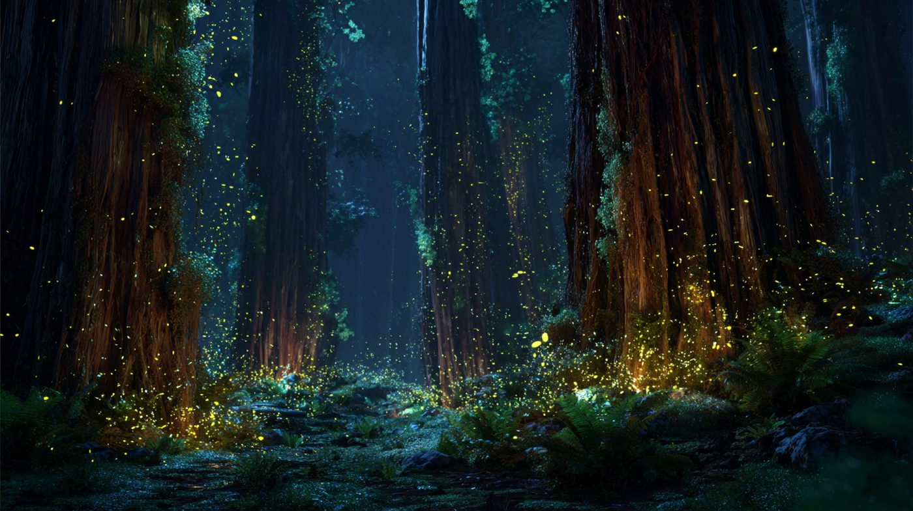
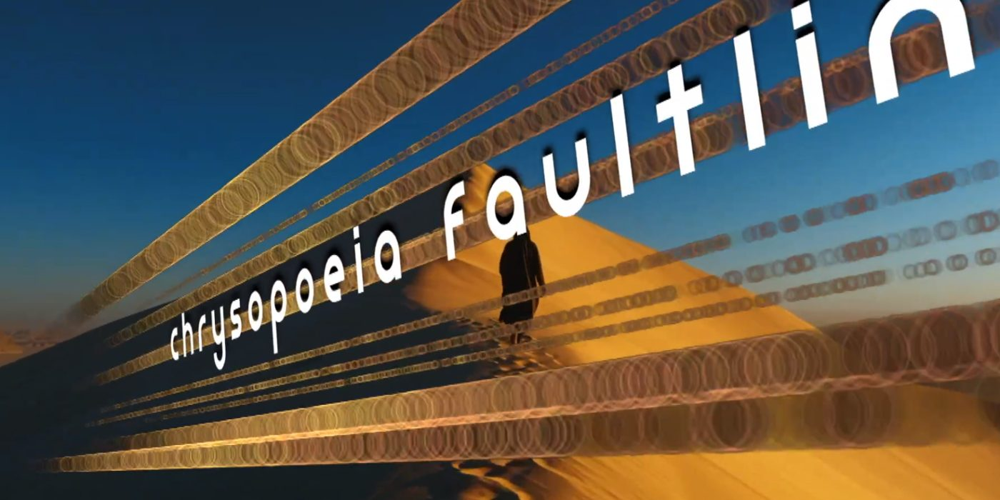
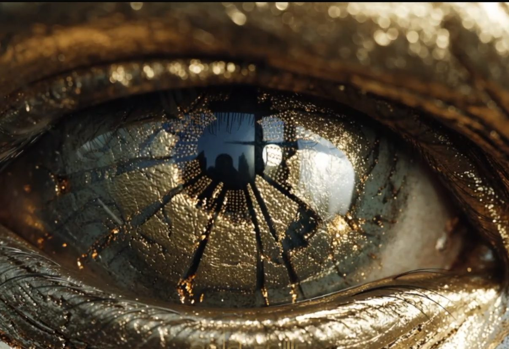
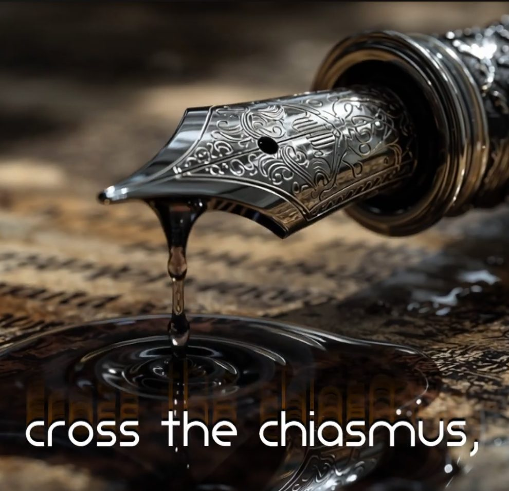
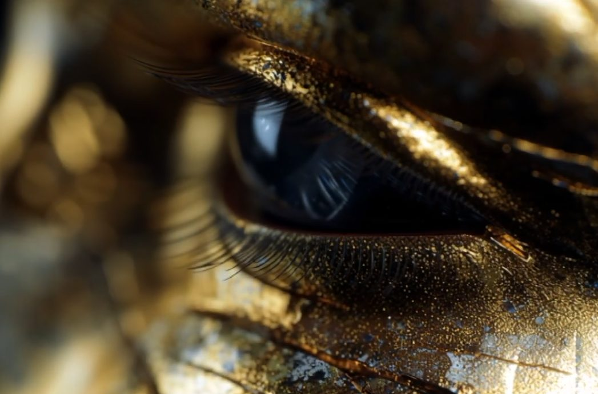

AI-Powered Creative AI-Generated Music & Band
AI-Generated Music & Media
Rapid Prototyping an Entire Band Universe

Project Overview
Jeff Schenck designed an end-to-end workflow creating the band "Kintsugi Dialectic" and their 7-song EP using generative AI tools exclusively. The project tested whether a single creative director build an entire, market-ready media brand using only generative AI with no team, studio, or budget.
Why a Music Band/Brand??
A band represents the ultimate creative product test requiring complete brand ecosystem elements: philosophy, identity, music product, visual system, and marketing assets. This model demonstrates scalability for software products, direct-to-consumer brands, and content marketing campaigns.


The AI Stack in Action
- The toolkit included:
- Gemini for strategy and lyrical direction
- Suno AI for composition with technical prompts
- Midjourney/OpenArt AI for visual assets
- Logic Pro for professional audio post-production
- Final Cut Pro and video editors for distribution
The Output: The "We Are" EP
Audio was generated first in Suno, then exported as individual stems for professional mixing and mastering in Logic Pro. Visual narratives followed afterward using AI-generated still images, animated using guided prompts.
Global Distribution & Market Test
The EP launched successfully on Apple Music, Spotify, YouTube Music, and YouTube, treating the project as a real product release.
Visual Storytelling with Strategy
The band name references Japanese kintsugi pottery repair. Visuals were strategically directed to reflect vast, broken landscapes, fractured imagery, and a sense of finding clarity in desolation.


Key Results & Takeaways
Strategy combined with AI fluency represents the new competitive edge
A cohesive, market-ready brand with multiple product lines (audio, video) can be built and launched in days
AI amplifies rather than replaces strategic vision
The role of creative leadership evolves to directing a suite of AI tools and digital apps as a cohesive creative force
In motion
A cohesive, market-ready brand with multiple product lines (audio, video) can be built and launched in days
The EP launched successfully on Apple Music, Spotify, YouTube Music, and YouTube
Want this kind of work on your brand?
If your brand should be working harder than it is, this is where it starts. One direct conversation.